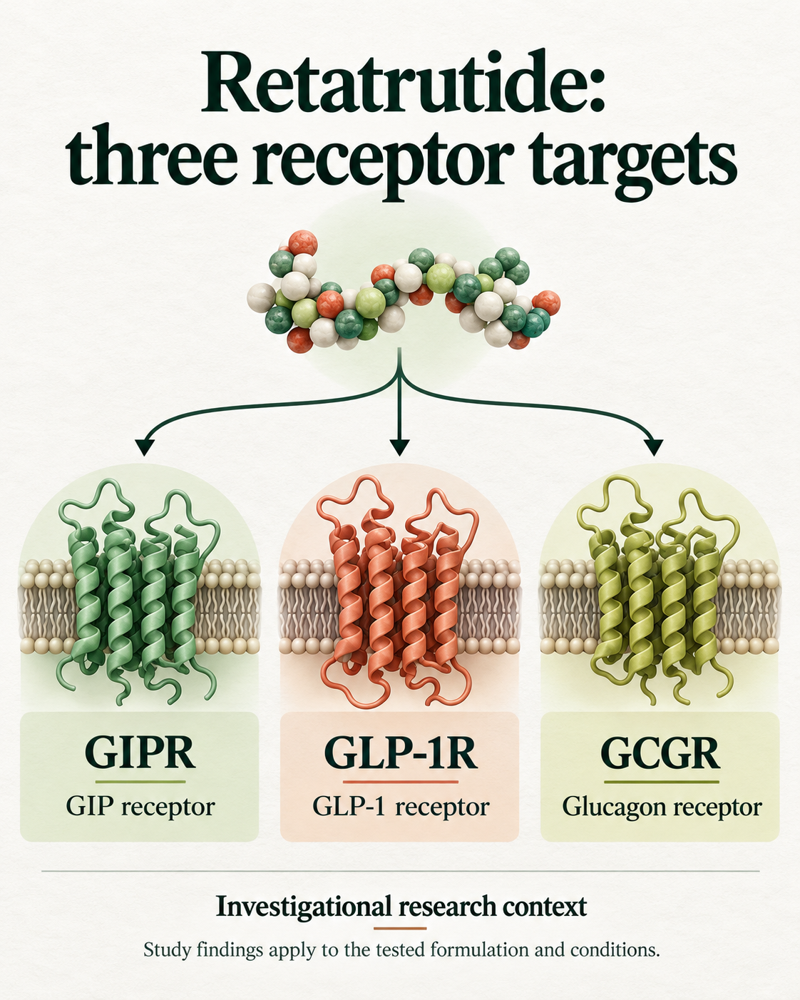
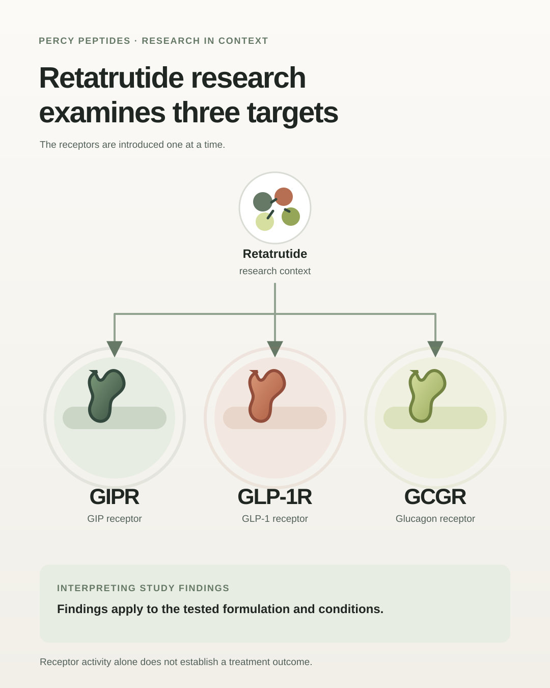

Retatrutide is an investigational peptide studied for activity at three hormone receptors: glucose-dependent insulinotropic polypeptide (GIP), glucagon-like peptide-1 (GLP-1), and glucagon (GCG). This multi-receptor profile has made it a subject of research into endocrine signalling and energy balance.
What a clinical trial can show
A Phase 2 clinical trial reported results for a specific investigational retatrutide formulation in adults with obesity. The study’s findings must be read in the context of its design, participants, dose groups, duration, monitoring, and comparator.
A trial result applies to the product and conditions studied. It does not verify the identity, composition, sterility, storage, or quality of a separately supplied material, and it does not establish that such material is approved or suitable for human use.
Investigational status and communication
Investigational status is not approval for routine treatment or permission to promote a medicine to the public. In the United Kingdom, businesses should obtain appropriate regulatory advice before offering or advertising products associated with medicinal claims. Describing a product as “for research use only” does not, by itself, settle its legal classification or make promotional claims acceptable.
Any information about a product’s current legal status should be checked against authoritative sources for the relevant market and reviewed by qualified legal and regulatory advisers. This article is educational and is not medical advice, a treatment recommendation, or an endorsement of any product.
VISUAL EXPLAINER
A visual guide to receptor research


References and further information
- J. M. Jastreboff et al. “Triple–Hormone-Receptor Agonist Retatrutide for Obesity — A Phase 2 Trial.” New England Journal of Medicine 389 (2023). Read the clinical trial
- UK MHRA, ASA and GPhC. “Warning on promoting newly licensed prescription-only medicines and unlicensed medicines for weight management.” Read the UK guidance